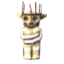

Yagluth: plats, frammaning och tips
Yagluth: plats, frammaning och tips
Yagluth, Fulingarnas fallna kung, är den femte bossen. Bara hans överkropp kryper fram över Slätten, men hans eld och meteorer gör honom till en av spelets dödligaste strider. Eldskydd är inget val här, det är ett måste.
| Biom | Slätt |
|---|---|
| Hälsa | 10 000 |
| Offergåva |  5 × Kung Fuls statyett |
| Svag mot | – |
| Resistent mot | Stick, Eld |
| Immun mot | Gift |
| Byte | 3 × Plågad ande |
| Övermänsklig kraft | 10 % mer skada, 50 % resistens mot elektricitet och 25 extra nivåer i Jordbruk. |
Visa altare för Yagluth på kartan
Så hittar du Yagluth
Yagluths altare står på Slätten: en ring av enorma stenfingrar som sticker upp ur marken. Röda runstenar vid stencirklar på Slätten markerar det på din karta. De är sällsynta, så här sparar kartan dig ett långt letande.
För att frammana honom lägger du 5 Kung Fuls statyetter på altaret. Det finns en statyett i de flesta fulingbyar, och Fulingkämpar släpper ibland en. Statyetterna kan tas genom portaler.
Förberedelser
- Brygg Kornvin med eldskydd och ta med flera per spelare. Det varar i 10 minuter och måste vara aktivt under hela striden.
- Bär fullt uppgraderad vadderad rustning. Vargskinnsrustning är ett minimum.
- Ta med ett svärd av svartmetall, Piggsvin eller Frostner. Yagluth är mycket resistent mot stickskada, så spjut, atgeirer och de flesta pilar är dåliga val.
- Vill du slåss på avstånd använder du frostpilar och räknar med en lång strid.
- Ta med läkande mjöd och uppiggande mjöd, och ät Slättens bästa mat: oxödlepaj, blodpudding, fiskknyten.
- Rensa först bort alla fulingar, oxödlor och mördarmyggor runt altaret och ställ en portal på säkert avstånd.
Attacker
- Eldandedräkt: han lyfter huvudet och sveper en lång eldstråle efter dig. Spring i sidled eller ställ dig bakom ett av stenfingrarna.
- Knytnävsslag: hans näve glöder blått, sedan slår han i marken och orsakar en stor explosion. Flytta dig så fort du ser glöden.
- Meteorer: hans hand glöder orange och meteorer regnar över din position i flera sekunder. Fortsätt springa åt samma håll tills det slutar.
Tips och knep
- Varje attack förvarnas med en tydlig glöd. Lär dig de tre signalerna så blir striden lugn: anfall, se glöden, flytta dig, upprepa.
- Anfall bakifrån eller från sidan och bara två eller tre slag åt gången. Det är girighet som dödar spelare här.
- Stenfingrarna stoppar hans eldandedräkt, men meteorerna går över dem. Vila inte bakom en pelare under meteorregnet.
- När du brinner får du lätt panik och slösar uthållighet. Med kornvinet aktivt halveras eldskadan ungefär, och striden blir förlåtande.
- Aktivera Likhögens kraft när du går in i närstridsfasen. Fyll på kornvinet i god tid, inte när det tar slut.
- Yagluth är långsam. Behöver du läka dig eller äta går du bara ifrån honom.
Belöning
Yagluth släpper 3 Plågade andar och sin trofé. Av en Plågad ande bygger du Irrblossfontänen. Den samlar irrbloss, som du behöver till det Lysande irrbloss som skingrar dimman i Dimmornas Dal.
När han är besegrad säljer Haldor ägg så att du kan föda upp höns, och Myrhäxan börjar sälja Slättens krydda.
Hans övermänskliga kraft höjer all din skada med en tiondel. Den är ett starkt val för Dimmornas Dal och senare bossar.